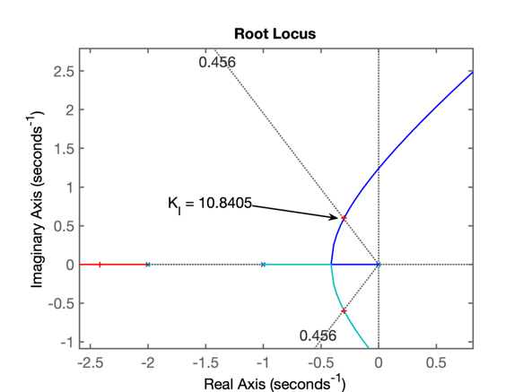

Arquivo criado na aula de 13/05/2020
Seguem procedimentos usados para projeto de 3 controladores:
para a mesma planta abaixo:
\[ G(s)=\dfrac{1}{(s+1)(s+2)(s+10)} \]
onde o único resquisito de controle já especificado foi:
>> % Preparando ambiente de trabalho
>> mkdir aula_13_05_2020 % cria pasta
>> cd aula_13_05_2020/ % chaveia para pasta
>> diary aula_13_05_2020.txt % cria arquivo "log" .txt
>> pwd % confirmando diretório de trabalho
ans =
'/Volumes/Data/Users/fernandopassold/Documents/MATLAB/aula_13_05_2020'
>> % Entrando com função transferência da planta:
>> G=tf ( 1, poly( [ -1 -2 -10 ] ) )
G =
1
------------------------
s^3 + 13 s^2 + 32 s + 20
Continuous-time transfer function.
>> zpk(G) % confirmando dados ingressados num formato mais conveniente
ans =
1
------------------
(s+10) (s+2) (s+1)
Continuous-time zero/pole/gain model.
>> rlocus(G) % gráfico do Root Locus
>> OS=20; % overshoot máximo
>> zeta=(-log(OS/100))/(sqrt(pi^2+(log(OS/100)^2)))
zeta =
0.4559
>> hold on
>> zgrid(zeta, 0) % sobreponde linha guia de zeta = cte
>> [Kp, polos_MF ]=rlocfind( G )
Select a point in the graphics window
selected_point =
-1.1789 + 2.3377i
Kp =
53.0117
polos_MF =
-10.6369 + 0.0000i
-1.1815 + 2.3384i
-1.1815 - 2.3384i
>> % RL correspondente na figura abaixo
>> % Gráfico do RL para Controlador Proporcional:
Fechando a malha e verificando resposta ao degrau:
>> % Fechando a malha
>> ftmf_Kp=feedback(Kp*G, 1);
>> figure; step(ftmf_Kp)
>> % Resultado do step:
>> % Resposta ao degrau unitário para Controlador Proporcional:

Repare que a referência adotada foi um degrau unitário, então \(y(\infty)\) deveria tender o máximo possível para 1 para reduzir o erro. Mas percebe-se que \(y(\infty) < 1\), verificando o erro de regime permanente:
>> dcgain(ftmf_Kp) % verificando y(\infty)
ans =
0.7261
>> erro_Kp=(1-dcgain(ftmf_Kp))/1*100
erro_Kp =
27.3929ou seja, 27,4% de erro em regime permanente. Algo considerável.
Acrescentando pólo na origem (integrador), para anular o erro de regime permanente (teoria do erro).
Este integrador possui equação:
\[ C(s)=\dfrac{K_i}{s} \]
>> C_I=tf( 1, [ 1 0 ] )
C_I =
1
-
s
Continuous-time transfer function.
>> ftma_I=C_I*G; % calculando a FTMA(s) com este controlador
>> zpk(ftma_I)
ans =
1
--------------------
s (s+10) (s+2) (s+1)
Continuous-time zero/pole/gain model.
>> figure; rlocus(ftma_I)
>> hold on
>> zgrid(zeta, 0)
>> [K_I, polos_MF] = rlocfind(ftma_I)
Select a point in the graphics window
selected_point =
-0.3004 + 0.6003i
K_I =
10.8405
polos_MF =
-9.9849 + 0.0000i
-2.4173 + 0.0000i
-0.2989 + 0.5998i
-0.2989 - 0.5998iSegue RL da planta com Integrador Puro e já com ganho para \(\zeta\) correspondente à \(\%OS=20\%\):

Note que o pólo na origem (integrador), deixa o sistema bem mais lento. Surge um par de pólos complexos dominantes formado pelo pólo do integrador (\(s=0\)) e pelo pólo mais lento da planta (em \(s=-1\)). Tanto o ponto de partinda quanto os traçados de RL referentes à estes 2 pólos estão mais próximos do eixo \(j \omega\) do que os pólos complexos dominantes no caso do Controlador Proporcional (compare este RL com o RL do Controlador Proporcional).
>> % fechando a malha
>> ftmf_I=feedback(K_I*ftma_I, 1);
>> figure; step(ftmf_I)
>> % Comparando os 2 controladores
>> figure; step(ftmf_Kp, ftmf_I)
>> % Comparando a resposta ao degrau para estes 2 controladores:

Uma rápida análise permite notar:
Existe alguma solução melhor que permita anular o erro de regime permanete enquanto mantêm o tempo de assentamento baixo?
Revisando a estratégia, percebemos que projetamos um controlador integrador puro, mas não um PI, que é composto pela soma de 2 ações de controle. O PI soma a ação de controle Proporcional + ação de controle do integrador puro, ou na forma de um diagramda de blocos:
Note: a diferença em relação ao Integrador Puro é um zero localizado (normalmente) entre o pólo integrador e o pólo mais lento da planta.
Inicialmente vamos considerar que este zero do PI fique bem no meio do pólo integrador e do pólo mais lento da planta (em \(s=-1\)), ou seja, vamos fixar o zero em \(s=-0,5\):
No Matlab:
>> % ## Projeto do Controlador PI
>> C_PI=tf( [1 0.5] , [ 1 0 ] )
C_PI =
s + 0.5
-------
s
Continuous-time transfer function.
>> ftma_PI=C_PI*G;
>> zpk(ftma_PI)
ans =
(s+0.5)
--------------------
s (s+10) (s+2) (s+1)
Continuous-time zero/pole/gain model.
>> figure; rlocus(ftma_PI)
>> hold on;
>> zgrid(zeta, 0)
>> [K_PI, polos_MF]=rlocfind(ftma_PI)
Select a point in the graphics window
selected_point =
-0.9904 + 1.9807i
K_PI =
44.0865
polos_MF =
-10.5179 + 0.0000i
-1.0329 + 1.9917i
-1.0329 - 1.9917i
-0.4163 + 0.0000i
>> % RL à seguir:
>> % Segue RL da planta + PI (com ganho para \(\zeta\) correspondente ao \(\%OS=20\%\)):
Fechando a malha com o ganho encontrado:
>> ftmf_PI=feedback(K_PI*ftma_PI, 1);
>> figure; step(ftmf_Kp, ftmf_I, ftmf_PI)
>> % SEgue figura comparativa dos 3 controladores
>> % Segue figura mostrando resposta ao degrau e comparando os 3 controladores propostos nesta aula:
Comentários
Então vamos seguir para o próximo tópico à ser debatido na próxima aula:
Pelas equações estudadas anteriormente referente à respostas de sistemas de 2a-ordem, em especial o caso de sistema sub-amortecidos, percebemos que:

A título de curiosidade podemos tentar ser ousados e especificar um tempo de resposta (assentamento) de \(t_s<3,5\) segundos. Um valor não menor que o do Controlador Proporcional (impossível de ser "batido" quando acrescentamos ação integral à um sistema), mas bem menor que o tempo de assentamento de um controlador Integrador Puro.
Note que eventualmetne este valor não poderá ser resolvido matemáticamente, isto é, a regra do RL não permite pólos complexos com parte real tão pequena que ainda possam fazer parte do RL. Neste caso, teremos que "relaxar" um pouco nossas expectativas e passar \(t_s\) para 4 segundos.
A fim de faciliar a continuidade da(s) próxima(s) aula(s), não esqueceder de ingressar os últimos comandos no Matlab antes de simplesmente sair deste programa:
>> save dados % salva as variaveis criadas nesta seção de trabalho para próxima aula
>> % load dados % este é comando que será usado para recuperar os dados
>> diary off % não esquecer de "fechar" o arquivo texto diary
>> quitProf. Fernando Passold, em 13/05/2020.